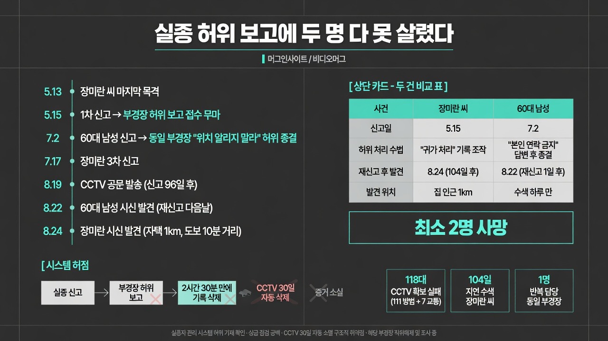

https://www.youtube.com/@videomug0MORNING DIGEST · 2026-08-25 · https://www.youtube.com/@videomug0🎬 영상
실종 허위 보고에 두 명 다 못 살렸다 / 머그인사이트 / 비디오머그

01핵심 개요
항목
내용
사건
제주 한림읍 실종 여성 장미란 씨, 신고 104일 만에 집 인근에서 시신으로 발견
핵심 원인
최초 신고를 접수한 경찰관(부 경장)이 수사 대신 허위 보고로 사건을 종결 처리
피해 규모
최소 2명(장미란 씨 및 60대 남성 실종자) 사망, 3번째 실종 신고자도 시신 발견
결정적 증거
CCTV 118대(방범 111대+교통 7대) 자료가 30일 자동삭제 주기로 순차 소멸
현재 조치
해당 경찰관 직위해제 상태, 형사 입건 여부·추가 비위는 조사 중
보도 매체
비디오머그 '머그인사이트'
02핵심 내용 구조
이 영상은 하나의 사건이 아니라 동일 경찰관이 반복한 두 건의 실종 사건 은폐를 교차 편집으로 보여준다.
장미란 씨 사건: 2026년 5월 13일 마지막 목격 → 5월 15일 첫 신고 → 담당 부 경장이 허위 보고로 접수 처리 무마 → 가족의 3차 신고(7월 17일) 이후에도 경찰은 한 달 뒤인 8월 19일에야 CCTV 확보 공문 발송 → 8월 24일 오전 자택에서 도보 10분(약 1km) 거리에서 시신 발견 (영상 0:32)
또 다른 실종(60대 남성) 사건: 7월 2일 가족이 아버지 실종 신고 → 같은 부 경장이 "본인이 위치를 알리지 말라고 했다"며 허위로 무마 → 가족이 재차 문의해도 "개인적으로 알아보라"는 답변만 반복 → 장미란 씨 사건이 불거진 뒤 가족이 8월 21일 재신고 → 수색 하루 만인 8월 22일 시신 발견 (영상 2:12)
시스템적 허점: 실종자 관리 시스템에서 신고 접수 2시간 30분 만에 장미란 씨 기록이 삭제된 정황 확인, 이는 '귀가' 또는 '변사'로 허위 기재해야만 가능한 조작 (영상 3:45)
03사건 배경·구조적 맥락
CCTV 저장 기간이 통상 30일로 설정돼 있어, 초기 대응이 늦어지면 결정적 물증(동선 자료)이 자동으로 영구 소실되는 구조적 취약점이 존재한다.
경찰 실종 수사는 현장 경찰관의 1차 판단에 크게 의존하는데, 이번 사건은 그 판단 권한이 허위 보고로 오남용되어도 상급 기관이 장기간(3개월 이상) 걸러내지 못하는 감독 공백을 드러냈다 (영상 1:49).
가족이 재차 신고하지 않는 한 허위 종결 여부를 확인할 방법이 사실상 없었다는 점에서, 실종 신고 처리 결과를 검증하는 상시적 교차 점검 체계 자체가 부재했다.
동일 경찰관이 한 건이 아니라 최소 두 건의 실종 신고를 유사한 수법(허위 답변 후 종결)으로 처리한 점은, 이번 사안이 우발적 실수가 아니라 반복된 직무유기·직권남용 패턴임을 시사한다.
04사회적 함의
경찰관 개인의 허위 보고 한 건이 CCTV 증거 소멸, 수색 조기 중단, 다른 실종자 사건의 방치로 이어지며 최소 두 생명을 살릴 기회를 놓쳤다는 점에서, 초동 대응 실패가 돌이킬 수 없는 결과로 직결되는 구조적 위험성을 보여준다.
전문가는 해당 경찰관을 "경찰이 아니라 범죄자"로 규정하며, 허위 처리가 확인된 즉시 긴급체포하지 않고 직위해제에 그친 초기 대응 수위 자체에 의문을 제기했다 (영상 3:22).
실종 신고·수색 처리 결과를 상급자나 별도 기구가 주기적으로 검증하는 내부 통제 장치 마련이 시급하다는 점, 그리고 CCTV 등 증거자료의 보존 기간을 사건 진행 상황과 연동해 자동 연장하는 제도 개선 필요성이 부각된다.
유사 사건 재발 방지를 위해 경찰 개혁 논의(실종 수사 매뉴얼, 감사 체계, 허위 공문서 작성에 대한 처벌 강화)가 뒤따를 가능성이 높다.